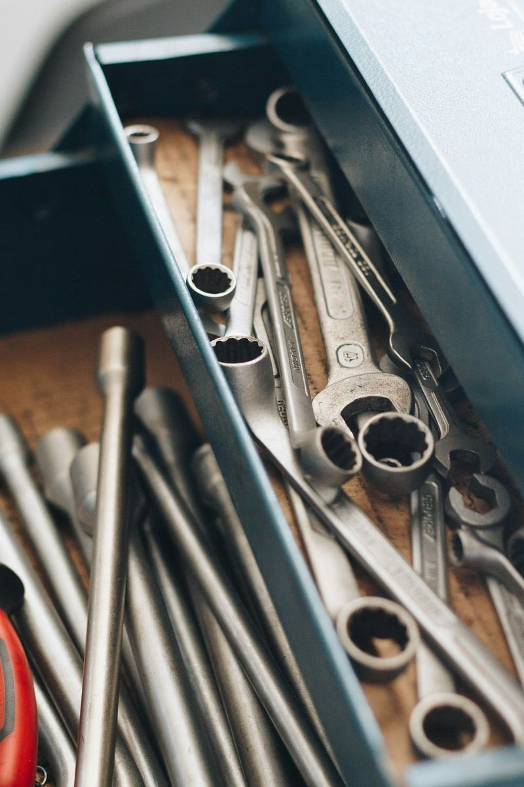

Nezávazný náhled nového webu od studia
Lanthir
. Líbí se Vám?
Napište nám
JL-AUTO
autoservis a STK · Orlová-Lutyně
Kdy na STK
Služby
Kontakt
Objednat auto
Objednat auto
Napište, co potřebujete. Ozveme se a domluvíme termín.

Co potřebujete
Příprava na STK
Servis
Oprava
Pneumatiky
Auto
Jméno
Telefon
Popis
Poslat SMS
Poslat e-mailem